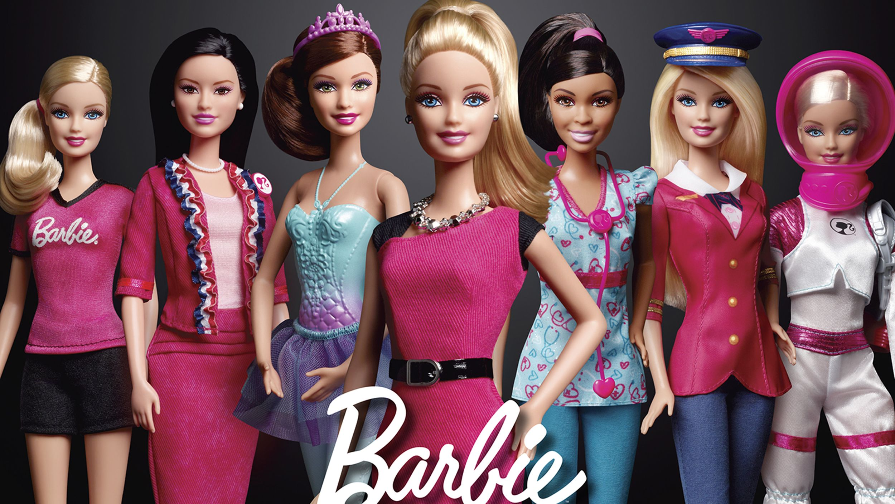

Barbie – кукла, которая воплощает мечты в реальность. Нет более известной и популярной куклы, чем Барби. В этом году ей исполняется 63 года, но она по-прежнему остается любимой игрушкой девочек во всем мире. За долгую жизнь бренд-персонаж Barbie успел сменить множество стилей, сыграть разные роли, стать героиней нескольких мультфильмов, в частности, в «Истории игрушек 3: Большой побег». Знаменитая кукла признана символом ХХ века и продолжает завоевывать сердца новых поклонниц.
Барби – отражение красоты, моды, стиля, отменного вкуса и женственности. Несмотря на огромный ассортимент детских игрушек, эта кукла является мечтой многих. Именно ее хотят получить в подарок, именно она является эталоном женской красоты, позволяя маленьким девочкам уже в детстве реализовывать свои желания стать красивой и уверенной в себе.
Кто такая Барби? Барби – это кукла высотой 29 см с фигурой взрослой стройной девушки, которую выпускает компания Mattel. Образ игрушки был создан по типу персонажа газетного комикса Bild Lilli – женщины с тонкой талией и длинными светлыми волосами. Впервые кукла появилась в 1959 году в штате Висконсин (США).
